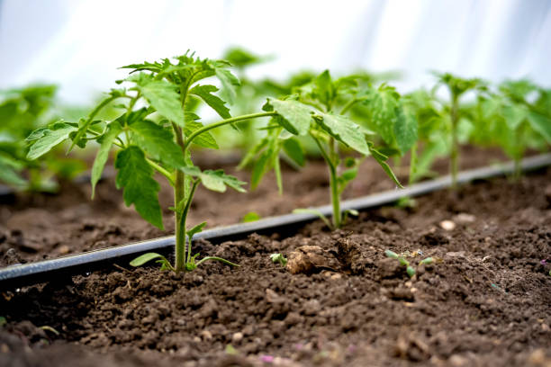

🌊 ¿Cómo funciona el riego por goteo?
El sistema de riego por goteo es una técnica de irrigación que suministra agua directamente a las raíces de las plantas a través de una red de tuberías y emisores. El agua se distribuye de manera lenta y controlada, gota a gota, asegurando que cada planta reciba exactamente lo que necesita.
🔧 Componentes principales:
- Fuente de agua: Pozo, tanque o conexión municipal
- Filtro: Elimina impurezas que pueden obstruir los goteros
- Tubería principal: Conduce el agua desde la fuente
- Tuberías laterales: Distribuyen el agua a las plantas
- Goteros/emisores: Liberan el agua de forma controlada
- Válvulas: Controlan el flujo y presión del agua
✅ Ventajas del riego por goteo
- 💧 Ahorro de agua: Reduce el consumo hasta un 70% comparado con otros sistemas
- 🌱 Eficiencia: El agua llega directamente a las raíces sin evaporación
- 🌿 Control de malezas: Solo se riega donde están las plantas
- 🌍 Adaptabilidad: Ideal para zonas secas y suelos arenosos
- 🔧 Bajo mantenimiento: Una vez instalado correctamente
- 🌱 Fertirriego: Permite aplicar fertilizantes disueltos en agua
- 📊 Automatización: Se puede programar con temporizadores
🛠️ Instalación básica
- Planificación: Diseña el sistema según tu terreno y cultivos
- Materiales: Adquiere tuberías, goteros, filtros y conectores
- Instalación: Coloca la tubería principal y laterales
- Goteros: Instala los emisores cerca de cada planta
- Prueba: Verifica que no haya fugas y el flujo sea correcto
- Programación: Ajusta la frecuencia y duración del riego
📺 Tutoriales y Más Información
Aprende más sobre riego por goteo con estos tutoriales prácticos:
🎥 Tutorial Básico de Riego por Goteo
Aprende los fundamentos básicos para instalar tu propio sistema de riego por goteo.
🎥 Guía Completa de Instalación
Una guía paso a paso completa para instalar un sistema de riego por goteo profesional.

💡 Consejo práctico
Para un riego eficiente, programa el sistema temprano en la mañana o al atardecer para minimizar la evaporación y maximizar la absorción por las plantas.